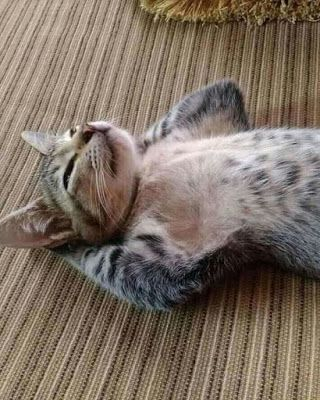
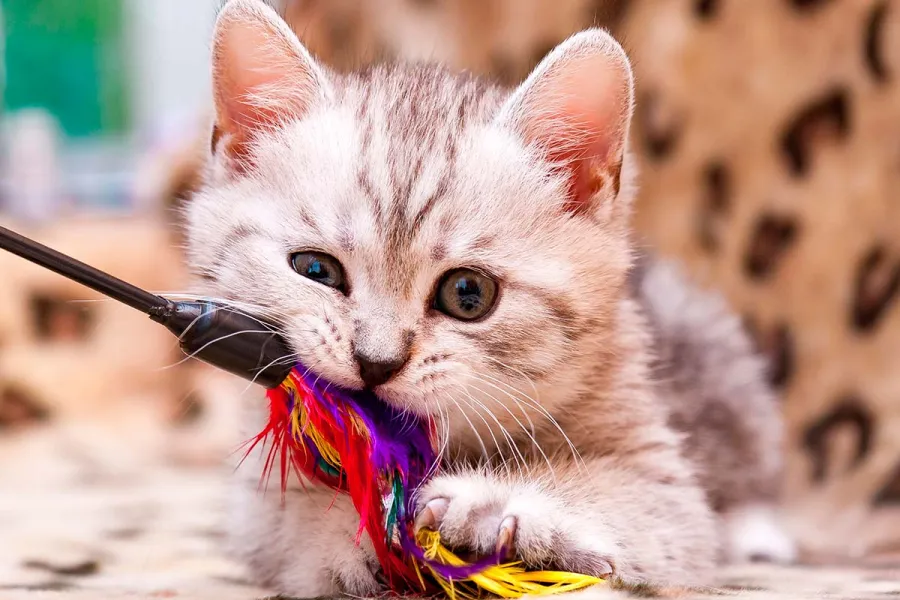
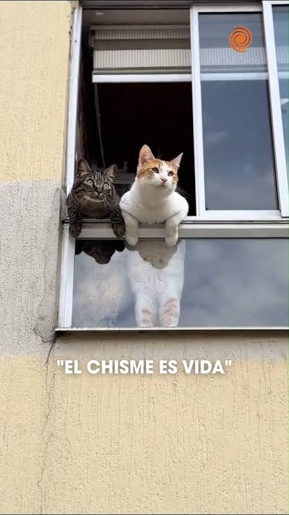

Últimos artículos
Consejos, curiosidades y datos interesantes sobre gatos.

¿Cómo cuidar correctamente a tu gato?
Descubre algunos consejos básicos para mantener a tu gato feliz, sano y cómodo en casa.
Leer más
¿Por qué los gatos aman dormir tanto?
Los gatos pueden pasar muchas horas durmiendo. Conoce las razones detrás de este curioso hábito.
Leer más
10 curiosidades sobre los gatos
¿Sabías que los gatos tienen un oído increíble? Descubre estos y otros datos sorprendentes.
Leer más